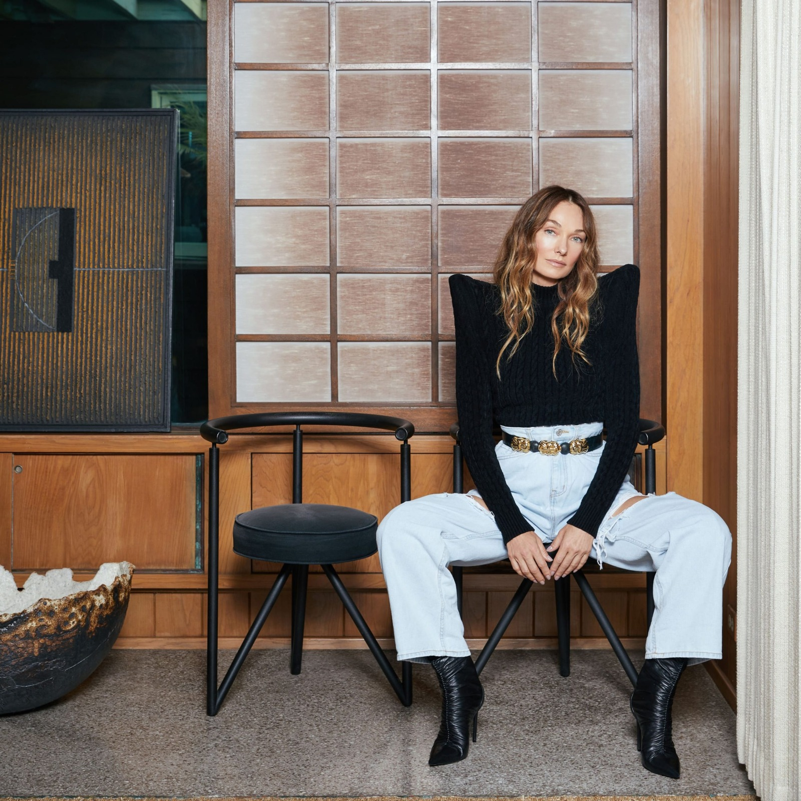

Biografía:
Es una diseñadora estadounidense. Fundó su propia firma de diseño Kelly Wearstler Interior Design a mediados de la década de 1990, sirviendo principalmente a la industria hotelera, y ahora diseña en espacios residenciales, comerciales, minoristas y de hospitalidad de alta gama. Sus diseños para la cadena hotelera Viceroy a principios de la década de 2000 se han destacado por su influencia en la industria del diseño.
Formación:
Wearstler recibió su formación académica en diseño de interiores, arquitectónico y gráfico y es autora de cinco libros de diseño. Entre los galardones se incluyen la lista A de Elle Décor, el AD100 de Architectural Digest, el AD 100 de Francia, el AD 100 de España como mejor diseñador internacional, el Top 20 de diseñadores de la revista Wallpaper y el The Design 100 de la revista Time. Wearstler es el primer diseñador de interiores que enseña una MasterClass y es miembro de la junta directiva de Desert X.